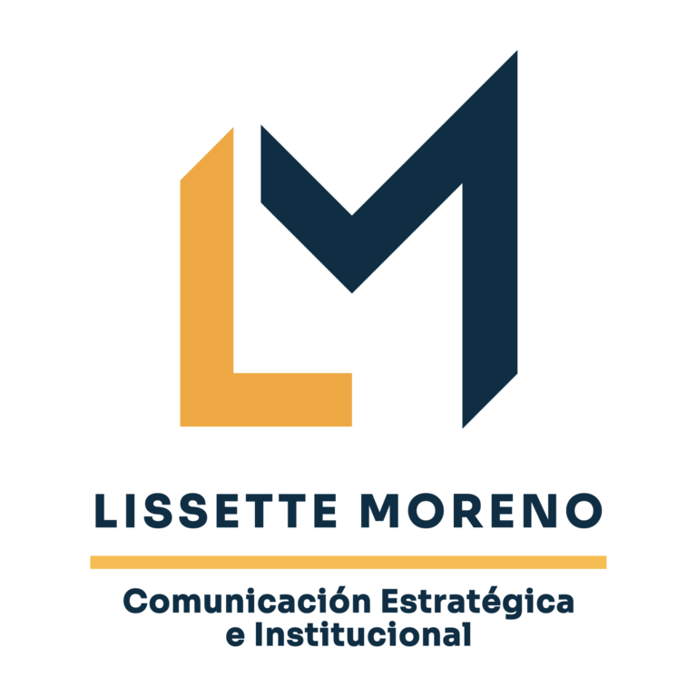

Consultora en comunicación digital, en relación directa con la Dirección Ejecutiva.
Comunicación estratégica e institucional
Comunicación con rumbo estratégico.
Más de 25 años fortaleciendo la visibilidad y articulación de organismos, redes y proyectos del sector marítimo-portuario en América Latina, desde la estrategia de comunicación hasta la gestión de calidad y el desarrollo web.
Panelista invitada · REPICA 48 · Santo Domingo, 2026
Fotografía 1 de 4
25+años de trayectoria
14 añosen DIRECTEMAR
Estrategia · Técnicauna visión integradora
Trayectoria
Hacer visible el valor de las instituciones.

Soy una profesional chilena cuya trayectoria combina comunicación institucional, marketing digital, gestión de calidad y desarrollo marítimo-portuario.
He trabajado en el diseño y desarrollo de plataformas web institucionales, la gestión comunicacional y la coordinación de proyectos marítimos. Esta combinación me permite moverme con soltura entre la estrategia, la técnica y la narrativa institucional, traduciendo iniciativas complejas en mensajes claros y pertinentes.
Creo en la colaboración como motor de resultados sostenibles. Trabajo desde una visión integradora que reúne comunicación, tecnología y gestión marítima para fortalecer la confianza, la articulación y el progreso de las organizaciones.
Editora de contenidos, Web Manager y Miembro de Honor.
Servicios
Soluciones que integran comunicación, tecnología y gestión.
Acompaño a instituciones, redes y proyectos del ámbito marítimo-portuario en el diseño de soluciones que mejoran su visibilidad, articulación y capacidad de gestión.
Comunicación institucional
Estrategia, línea editorial, contenidos y narrativa para organizaciones y proyectos.
Ecosistemas digitales
Marketing digital, desarrollo web, plataformas móviles y gestión integrada de canales.
Proyectos y calidad
Planificación, gestión documental, auditoría y sistemas de calidad aplicados a proyectos.
Desarrollo marítimo-portuario
Apoyo comunicacional y técnico para estudios, redes y proyectos sectoriales.
Resultados
La comunicación se planifica.
Y también se mide.
Indicadores orgánicos que reflejan crecimiento, consolidación de audiencias y mayor interacción con los contenidos institucionales.
COCATRAM · Instagram
+367%impresiones entre 2024 y 2025
COCATRAM · Instagram
+165%alcance entre 2024 y 2025
COCATRAM · LinkedIn
+39%interacciones entre 2024 y 2025
Web COCATRAM
+102%visitantes únicos entre 2024 y 2025
Audiencias recurrentes
En sus primeros cuatro meses, el nuevo sitio de Red MAMLa registró +4.000 visitantes únicos y +18.000 vistas de páginas.
Experiencia profesional
Una trayectoria entre comunicación, técnica y gestión.
Experiencia construida en organizaciones marítimas, proyectos de ingeniería, instituciones educativas y redes regionales.
01
2020 — actualidad · Consultoría en comunicación digital
COCATRAM
Edición de contenidos web, gestión de redes sociales y apoyo directo a la Dirección Ejecutiva. Contraparte técnica en la actualización del sitio institucional y en la definición de sus mejoras.
- Comunicación digital
- Gestión editorial
- Actualización web
02
2020 — actualidad · Edición y gestión web
Red MAMLa
Asesoría comunicacional vinculada con el Comité Ejecutivo, línea editorial y manejo de imágenes. Contraparte técnica del primer sitio y responsable del diseño visual y jerarquización de la información en su rediseño 2025–2026.
- Arquitectura de contenidos
- Diseño visual
- Posicionamiento regional
03
2019 — 2025 · Gestión de proyectos y calidad
SAIMIC Ltda.
Auditoría y documentación de calidad para Terminal Quebrada Blanca; planificación y control documental para el Sistema de Impulsión de Agua de Mar de ORCOMA; y coautoría del Reglamento Interno del Terminal Marítimo Puerto Andino.
- Gestión de calidad
- Planificación
- Documentación técnica
04
1997 — 2013 · Diseño web y asesoría comunicacional
Armada de Chile — DIRECTEMAR
Catorce años en la Dirección General del Territorio Marítimo y de Marina Mercante, desarrollando plataformas institucionales, boletines estadísticos y materiales para actividades protocolares y campañas de rescate marítimo.
- Plataformas web
- Información estadística
- Campañas marítimas
05
2018 — 2019 · Comunicación y auditoría interna
Instituto Profesional ESUCOMEX
Comunicación digital y diseño corporativo, junto con auditorías internas a los procesos certificados bajo la Norma ISO 9001:2015.
- Comunicación
- Diseño corporativo
- ISO 9001:2015
Mi enfoque
Comunicar es construir sentido, confianza y dirección.
Cada proyecto comienza por comprender la institución, su propósito y las audiencias que necesita movilizar.
- 01Comprender
Contexto, objetivos y audiencias.
- 02Estructurar
Estrategia, relato y prioridades.
- 03Comunicar
Contenido claro, útil y coherente.
- 04Conectar
Canales, comunidad y cooperación.
- 05Medir
Aprendizaje, mejora y resultados.
Participación regional
Experiencia frente a audiencias internacionales.
Presentaciones y participación en espacios vinculados con autoridades marítimas, cooperación técnica y redes regionales.
REPICA 48 · República Dominicana
Panelista invitada ante representantes del sector marítimo-portuario.
V REMPORT · Centroamérica
Expositora virtual en el encuentro de la Red de Mujeres Marítimas y Portuarias.
Taller regional OMI · Red MAMLa
Presentación del desarrollo y rediseño del sitio web regional.
III REMPORT · Centroamérica
Presentación sobre estrategia de redes sociales y entornos colaborativos.
REPICA 48 · 2026
“La comunicación institucional es más que informar: es construir confianza y sentido compartido.”
Una perspectiva construida desde la experiencia de comunicar para organizaciones que conectan países, instituciones y personas en torno al desarrollo marítimo-portuario.
Contacto
Conversemos.
Para proyectos de comunicación estratégica, plataformas digitales y colaboración en el ámbito marítimo-portuario, puedes contactarme directamente.